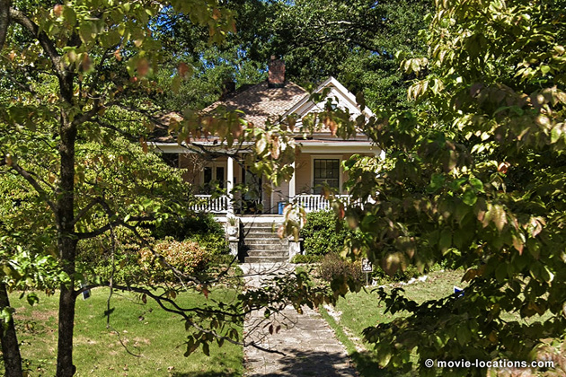
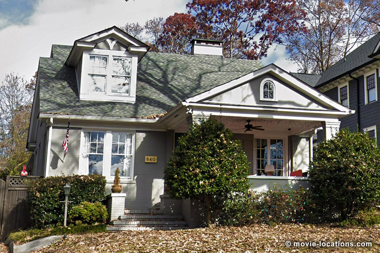
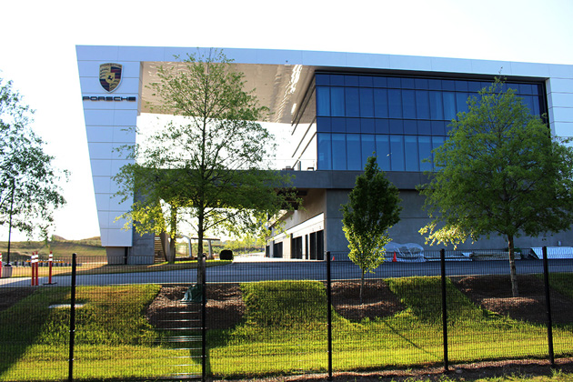
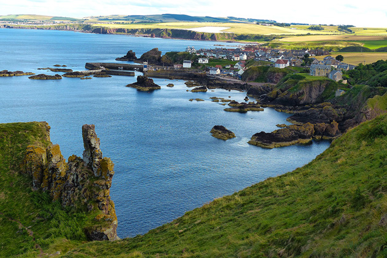
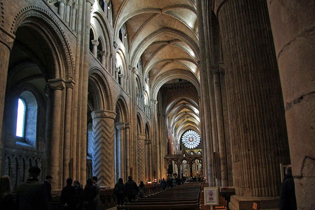

Avengers: Endgame
Main Content

It was a big ask but Joe and Anthony Russo delivered the goods, winding up the Marvel saga with a fittingly epic conclusion.
▶ Supposedly taking in ‘San Francisco’ and ‘New York’, the production was based at Pinewood Atlanta Studios, 461 Sandy Creek Road, Fayetteville in Georgia so most of the practical locations are in the area. ⏏
The film begins with a daringly downbeat first act dealing with the aftermath of ‘The Snap’. There’s a brief reminder of the horrific event as Clint Barton / Hawkeye (Jeremy Renner) enjoys a spot of R&R with his family when they suddenly disappear into thin air.
▶ The farmstead of the Barton family is the Turin Fertilizer Garden Center, 694 Christopher Road, Sharpsburg, about 30 miles southwest of Atlanta. ⏏
A daring mission by the remaining Avengers, to find Thanos (Josh Brolin) and reverse the Snap, fails disastrously, and the team is plunged into despair and falls apart. Five years later, a fractured and depopulated world is still coming to terms with the tragedy.
In an old storage unit in ‘San Francisco’, a long-forgotten piece of equipment is accidentally reactivated and Scott Lang /Ant-Man (Paul Rudd) – presumed lost in the Snap – is spat out from the tiny, tiny Quantum Realm where he’s been trapped, back into this dimension.
▶ Far from the 'Bay City', this U-store facility is 675 Metropolitan Parkway SW, in the MET Atlanta Business Park, southwest of Downtown, Atlanta. ⏏

▶ Slowly figuring out what has happened after visiting a (CGI) memorial to ‘The Vanished’ seemingly overlooking the Golden Gate Bridge, Lang makes his way to his ex-wife's home through unkempt and overgrown streets to 840 Clemont Drive NE, Virginia Highland, northeast Atlanta, where he's reunited with daughter Cassie. ⏏
Realising that the Quantum Realm timey-wimey thing might be a way to undo the disaster, the next logical step is to contact the ever-resourceful Tony Stark (Robert Downey Jr), who’s retired to begin a whole new life and has zero interest in some crazy ‘time heist’ to retrieve the Infinity Stones.
▶ His rustic lakeside home is the Guest Cabin on Big Lake, Bouckaert Farms, 9445 Browns Lake Road, Fairburn, about 20 miles west of Atlanta. You want to holiday there? Well, you can. I can’t guarantee a budget stay, but you can rent the very cabin on AirBnb.
Bouckaert Farms is no stranger to the Marvel Universe – its land was previously used for the ‘Wakanda’ battle scenes in Black Panther. ⏏
If Tony Stark remained steadfast in his refusal, we’d be left with a pretty disappointing film, so it’s not much of a spoiler to reveal that he has second thoughts, finally accepting that some form of time travel may indeed be possible.
▶ Scott, along with Natasha Romanoff (Scarlett Johansson), tracks down Bruce Banner (Mark Ruffalo), now a kind of semi-Hulk, Professor Hulk, to a diner where he poses for selfies with his eager fans. This branch of Landmark Diner at 2277 Cheshire Bridge Road NE, Atlanta, currently seems to be closed – whether it’s to be renovated or it’s closed for good is currently disputed. ⏏

▶ The Avengers headquarters, as it was in Captain America: Civil War, is the Aerotropolis Atlanta Porsche Experience Center, One Porsche Drive, Atlanta, which is essentially a theme park for high-end petrolheads. ⏏
▶ The interior of the Avenger HQ used Conference Rooms in the Sheraton Atlanta Airport Hotel, which stood at 1900 Sullivan Road. The hotel closed in 2017 and since filming has been demolished to make way for the expansion of the airport. ⏏

▶ It’s time to assemble the rest of the surviving Avengers. Hulk and Rocket (Bradley Cooper) journey to 'New Asgard’ to find Thor (Chris Hemsworth). Leaving not only the Atlanta district but the USA, the ruggedly picturesque seafront community is St Abbs, a little fishing village in Berwickshire, southeast Scotland, about 42 miles east of Edinburgh.
It's named after Æbbe, a 7th-century Northumbrian princess who struggled ashore here after being shipwrecked and proceeded to found a convent here. ⏏
▶ Natasha meanwhile discovers a zoned-out Clint Barton fighting against Yakuza heavies in ‘Tokyo’. Beneath all those coloured lights and lanterns, the ‘Japanese’ neighbourhood is Broad Street SW, between MLK Jr Drive and Mitchell Street SW, South Downtown, Atlanta. ⏏
Initial reluctance overcome, it’s back to Avengers HQ for some seriously convoluted time travelling.
▶ That vast workshop, in which the Quantum Tunnel is built, is the Assembly Plant and HQ of SANY, the Chinese heavy equipment manufacturer, at 318 Cooper Circle N, Peachtree City. ⏏
There’s not just one journey but several.

▶ Thor travels back to the old, vanished Asgard where he heartbreakingly meets his mother Frigga (Rene Russo) on the very day she is destined to die. The monumental architecture and geometric-patterned pillars are those of Durham Cathedral, County Durham,
Begun in 1093, the Cathedral is regarded as one of the finest examples of Norman architecture in Europe (those geometric designs are typical of the Norman style). It’s now a UNESCO World Heritage Site.
If you’re visiting, there’s plenty to see. Durham Cathedral holds the relics of Saint Cuthbert (transported to Durham in the Ninth Century by monks from Lindisfarne, where he had lived as a hermit), one of five heads of St Oswald, one time King of Northumbria (not that Oswald was multi-headed, it’s just that Durham is one of five places in Europe claiming to contain the saint’s head), and the remains of the Venerable Bede. In addition, the Cathedral contains no fewer than three copies of the Magna Carta.
It was previously seen in Shekhar Kapur’s historical epic Elizabeth, with Cate Blanchett, and as part of 'Hogwarts School' in Harry Potter and the Philosopher’s Stone. ⏏
In a separate mission, Stark and Lang revisit the ‘New York’ of Captain America: The Winter Soldier to retrieve the Tesseract from the clutches of Alexander Pierce (Robert Redford).
▶ The lobby of ‘Stark Tower’, where their task gets a whole lot more complicated once Loki (Tom Hiddleston) interferes, is that of The Proscenium, a 24-story high-rise office block at 1170 Peachtree Street, Atlanta. ⏏
▶ There’s a brief detour to Upstate New York, not for the main cast and crew but a Second Unit capturing landscapes to be used as ‘background plates’, digitally replacing those ubiquitous green screens for battlefield scenes.
They visited Staatsburgh State Historic Site, 75 Mills Mansion Drive, 1 Road, Staatsburg in Dutchess County and, across the Hudson River, the Black Creek Preserve, Winding Brook Road, Esopus in Ulster County. ⏏
▶ Back to Atlanta and, avoiding possible spoilers, the final scene with an unexpected happy ending – or beginning – for two characters, is a modest wood-frame home at 1340 Metropolitan Avenue, East Atlanta Village, east of Downtown. ⏏
• Many thanks to Michael Schaeffer for help with this section.
Visit Info
Visit The Film Locations
Georgia
Visit: Georgia
Visit: Atlanta
Flights: Hartsfield-Jackson Atlanta International Airport, 6000 North Terminal Parkway, Atlanta, GA 30320 (tel: 800.897.1910)
New York State
Visit: New York State
Visit: Staatsburgh State Historic Site, 75 Mills Mansion Drive, 1 Road, Staatsburg, NY 12580 (tel: 845.889.8851)
Visit: Black Creek Preserve, Winding Brook Road, Esopus, NY 12429
UK | Scotland
Visit: Scotland
Visit: St Abbs
UK | County Durham
Visit: County Durham
Visit: Durham Cathedral, The College, Durham, DH1 3EH (tel: 0191.386.4266)